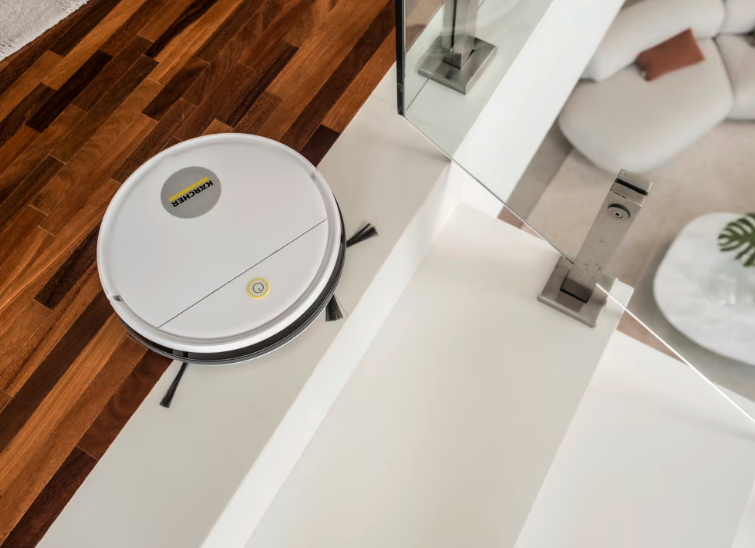
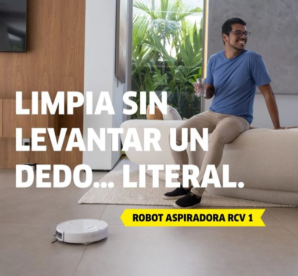

El robot aspirador RCV 1 de Karcher llega a México para que la limpieza automatizada esté al alcance de todos
La compañía alemana celebra el Día Mundial de Limpieza dando un paso más hacia la democratización de la limpieza autónoma con el lanzamiento de una solución de alta calidad y accesible para todos los hogares.


La compañía alemana celebra el Día Mundial de Limpieza dando un paso más hacia la democratización de la limpieza autónoma con el lanzamiento de una solución de alta calidad y accesible para todos los hogares.
Karcher, empresa líder mundial en soluciones de limpieza, anunció el lanzamiento en México de su primer robot aspirador para automatizar la higiene de pisos: el RCV 1. Este modelo, el primero de su gama de limpieza robótica en el país, arriba al mercado nacional con un enfoque de alta calidad, eficiencia y accesibilidad. Como referente de la industria, Karcher conmemora el próximo Día Mundial de Limpieza (20 de septiembre) con un equipo automatizado que cuenta con una función 3 en 1: barre, aspira y limpia en seco. Su sistema inteligente le permite regresar de manera automática a la estación de carga cuando la batería es baja, mientras que el contenedor de polvo de 310 ml con filtro HEPA (High Efficiency Particulate Air) captura partículas diminutas en cualquier piso duro y alfombras de pelo corto. “En la antesala de una fecha tan importante como lo es el Día Mundial de la Limpieza, nos emociona confirmar que el robot aspirador RCV 1 ya está disponible en México. Esta solución, respaldada por la calidad alemana de Karcher, fue desarrollada para que nuestros usuarios se olviden del aspirado de los pisos en casa a través de tres modos de limpieza. El RCV 1 te ayuda a limpiar de una manera automatizada y más eficiente para que te concentres en otras actividades”, comentó Francisco Márquez, director general de Karcher México.
Detalles
Disfruta de una limpieza eficiente de pisos sin moverte Con el RCV1 se puede realizar una limpieza autónoma de pisos mucho más rápido y fácil, gracias a su diseño delgado (7 cm) para aspirar debajo de muebles y acceder a los lugares más difíciles. Además, su capacidad de succión de 500 Pa y capacidad de maniobrar desniveles en el suelo de hasta 10 milímetros, lo que permite a los usuarios enfocarse en otras actividades. La innovación de este robot aspirador también ofrece una autonomía de limpieza de 90 minutos y retorno inmediato cuando a la base de carga cuando la batería es baja. Su rendimiento cubre hasta 90 metros cuadrados por hora, dependiendo del modo seleccionado. Además, el RCV 1 cuenta con tres modos de limpieza ajustables desde un control remoto, adaptándose a cada necesidad: Modo automático: Acción de limpieza para cubrir el área completa de una estancia. Modo enfoque: Concentración en una zona específica que requiera mayor intensidad de higiene. Modo esquina: Aspiración en bordes y esquinas de las estancias o habitaciones. Alineado a los más altos estándares de calidad de la marca, este robot aspirador cuenta con dos cepillos giratorios que garantizan una cobertura amplia y eficiente en el levantamiento de polvo, suciedad pequeña y pelos. Sus sensores de choque fueron diseñados para que el usuario no se preocupe por el riesgo de colisiones, ya que evita muebles, obstáculos y caídas en las escaleras. Este es el primer equipo de la línea RCV que Karcher introduce en nuestro país para enmarcar el inicio de una nueva era en la limpieza autónoma. En el futuro próximo se lanzarán los modelos RCV3 y RCV5, junto con el KIRA B 50, diseñado para el mantenimiento de pisos comerciales e industriales. Todos estos equipos, desarrollados en Alemania, provienen de diferentes plantas con producción neutra en emisiones de dióxido de carbono (CO₂), reafirmando su compromiso en materia de sostenibilidad. “Durante más de 90 años, hemos invertido en el desarrollo de equipos para cada desafío de higiene en la vida cotidiana. Además de combinar tecnología, innovación y calidad, también estamos enfocados en hacer que nuestras soluciones sean más accesibles para todas las personas, democratizando así el mercado de limpieza avanzada. Con esta visión, el RCV 1 emerge en este mercado para abrir un nuevo telón de la limpieza robótica, reduciendo la interacción humana, brindando mayor comodidad y los resultados superlativos de higiene doméstica”, cerró el directivo de Karcher México.
Este logro no solo refleja la eficacia de sus productos, sino también el impacto positivo que tiene la tecnología de Kärcher en diversas industrias y en el hogar.